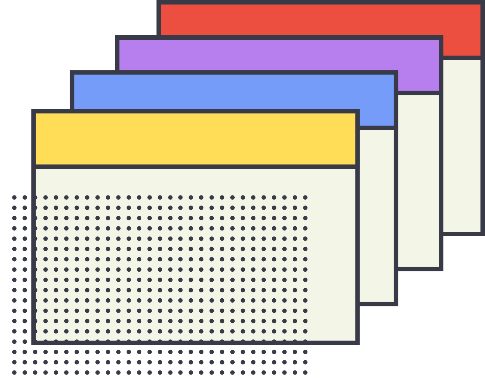

tool:kit
The reflective designers toolkit
Resources, models, and prompts to help students write better design reflections.
get started


Process
Describes and outlines what are design process docs. This introduces you to the various touchpoints needed for a comprehensive process document.
Start with process docsMethods
Reflection as a process can be applied in many different places, this section covers various different methods for reflecting.
Find your perfect method
Frameworks
Using reflective models is one of the easiest ways to engage with the reflective process, this section covers a variety of frameworks and prompts to help your reflections.
Build your framework